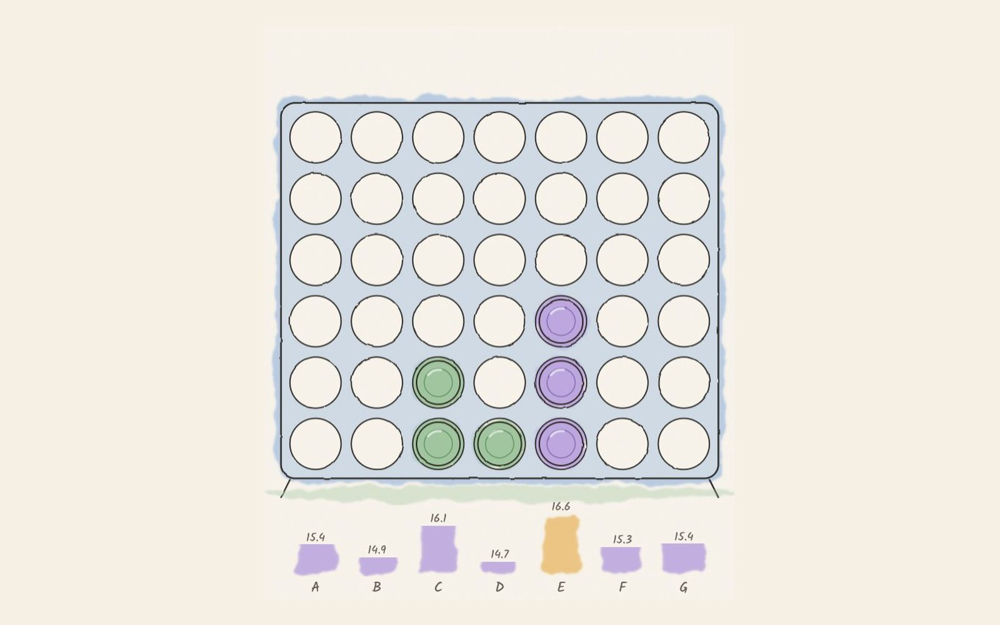

The Reel · Games · Data science
Four in a row vs five networks
Can I teach a computer to beat me at Connect 4?

Connect 4 is small enough to learn and big enough that nothing can memorise it: about 4.5 trillion positions. It is the perfect sandbox to see what reinforcement learning really needs.
750ktraining games for the strongest model
35+AI opponents in the tournament
5networks voting on every move
How it works
- 1Opponents. A random player and a rule-based one set the bar. The rules player beats random 99% of the time.
- 2Learn. Dueling Double DQNs, first on flat boards, then convolutional networks that see lines like a person does.
- 3Stabilise. Curriculum learning, reservoir replay and slow target updates against catastrophic forgetting.
- 4Combine. The five best checkpoints average their Q-values with fixed weights. In this page they run in your browser.
What I learned
An agent only gets as good as its sparring partners.
Ensembles of checkpoints are a cheap way to smooth over a single model's blind spots.